[...] Frühjahrsmorgen in München. ... Donnersberger Brücke [...] In der Nacht hat es geregnet. Jetzt ist der schmutziggraue Betonkoloß wieder trocken.
Doch der Schein trügt. Denn innen ist das Bauwerk naß. Durch winzige Risse, Fugen und Löcher hat sich das Wasser Jahr für Jahr unbeirrt seinen Weg nach unten gesucht, hat Winter für Winter aufgelöstes Tausalz mitgeschwemmt.
Das hat aus der Brücke eine Rostruine gemacht. Tief ist die agressive Salzbrühe in den Beton eingesickert - bis zu den dicken Stahlstäben, die dem 750 m langen Bauwerk seine Festigkeit geben. [...]
Für den Münchner Verkehr ist die auf drei Jahre angesetzte und 31 Millionen Mark teure Sanierung des maroden Monstrums eine Katastrophe. [...]
Nach ADAC-Recherchen droht diese Schicksal noch Hunderten von Betonbrücken aus den 60er und 70er Jahren. [...] Professor Dr. Alfred Schmuck, Straßenbauexperte der Universität der Bundeswehr: "Über viele 100jährige steinerne Bogenbrücken rollt heute noch der Verkehr. Dagegen halten neuzeitliche Betonbrücken unter dem zerstörenden Einfluß von Tausalz nicht - wie von ihren Erbauern erwartet - 70 bis 90 Jahre, sondern sind in Einzelfällen schon nach 30 bis 40 Jahren vor sich hinrostende Ruinen. Das wird den Steuerzahler jeweils zweistellige Millionenbeträge kosten - da kann einem schon Angst werden." Allein in Hamburg stehen beispielsweise hundert Brücken zur Generalüberholung an.
Gerade in der heutigen Zeit, wo überall Geld fehlt, wurmt das den Steuerzahler ganz besonders. Und er fragt sich: Muß das überhaupt sein?
Ja - aus Sicherheitsgründen ist es leider zwingend nötig. Denn keiner will Verantwortung dafür übernehmen, daß eine Brücke in sich zusammenstürzt. [...]"
Wie sieht es nun aus unter unseren Autobahnbrücken aus - interpretiert man die Finanzkatastrophe durch marode Straßenbrücken richtig - Mord- zumindest aber Diebstahlbeton, denn unsere künftigen Generationen werden ganz sicher noch mehr z.T. erschlagen oder verletzt, auf jeden Fall zur Gänze um Unmengen ihrer Steuergelder beraubt durch die instandsetzungserpresserischen Ergebnisse der Stahlbetonmafiosi als unsereiner? Hier eine Bilddokumentation von - im Verbund mit all den anderen Stahlbetonbauten - den Staatsbankrott vorprogrammierenden Autobahnbrücken, von mir aus dem Auto aufgenommen im August 2007:
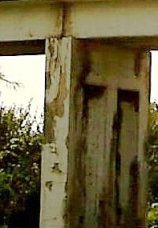
1. Rostschaden an Stahlbetonbrücke - Rostsprengung an Pfeiler und Auflager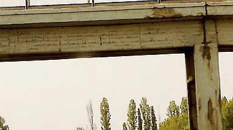
2. Rostschaden an Stahlbetonbrücke - Betonabplatzung an Stütze, Träger, Fahrbahnplatte, Brückenauflager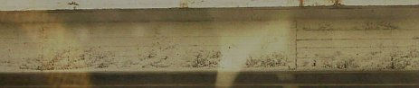
3. Freiliegende und angerostete Bewehrung an Stahlbetonträger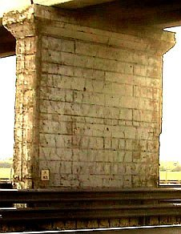
4. Korrodierte und nach Abplatzung der Betonüberdeckung freiliegende Bewehrung an Brückenpfeiler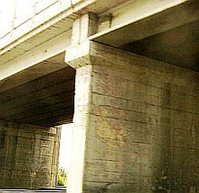
5. Verrostete Zugbewehrung an Brückenplatte, abplatzende Überdeckung am Stützpfeiler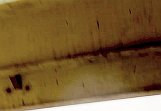
6. Untersicht der Brücke mit freiliegender und verrosteter Stahlbetonarmierung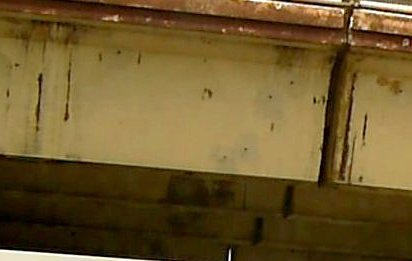
7. Abgeplatzte Stahlbetonüberdeckung an Bewehrungseisen des Brückenträgers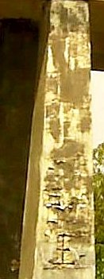
8. Durch verostete Stahlbetonbewehrung geschädigte Brückenstütze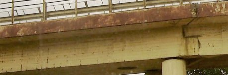
9. Stahlbetonträger einer Autobahnbrücke mit Betonschäden an Überdeckung und Bewehrung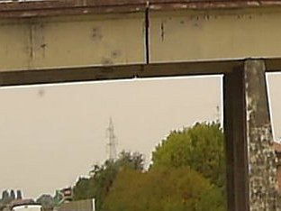
10. Brückenträger und Brückenpfeiler mit Rostschäden an Bewehrungseisen und abgeplatzter Überdeckung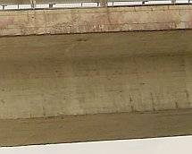
11. Ankorrodierte Brückenarmierung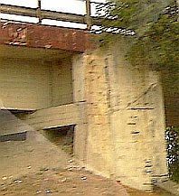
12. Freiliegende und angerostete Pfeilerbewehrung und Stahlbetonplatte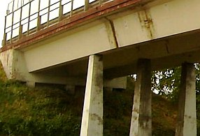
13. Rostschäden am Stahlbeton der Brückenstützen, am Brückenauflager und dem Brückenträger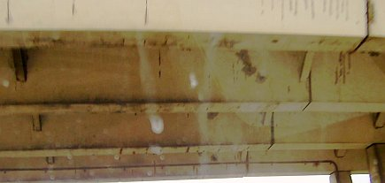
14. Rostschaden an Untersicht der Stahlbetonbrücke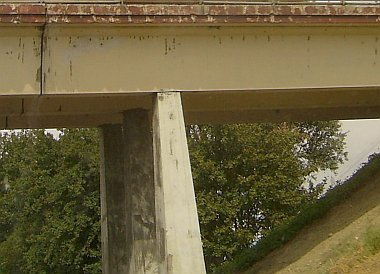
15. Rostschaden an den Stahlbetonträgern der Autobahnbrücke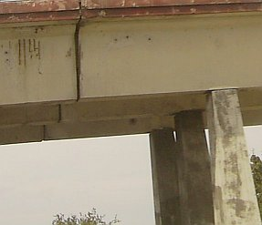
16. Verrostete Armierung und abgeplatzter Beton am Brückenträger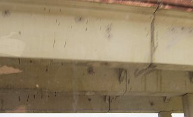
17. Untersicht der Stahlbetonträger mit Betonschäden an Betonüberdeckung und Armierungseisen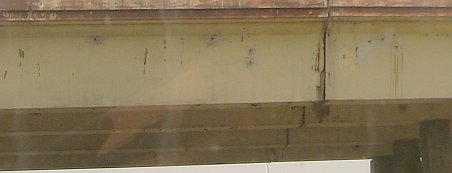
18. Durch Oxidierung angerostetes Trägersystem der Brücke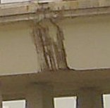
19. Verrostete (oxidierte) Stahlbetonarmierungen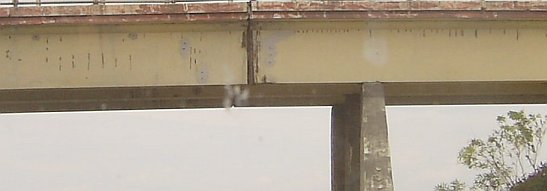
20. Stahlbetonschäden an Brückenträger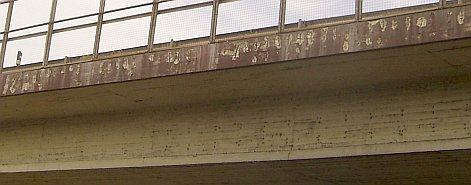
21. Betonschäden an Träger und Brückenplatte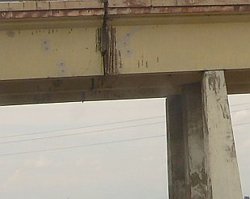
22. Rostschäden an Trägerstoß und Fahrbahnplatte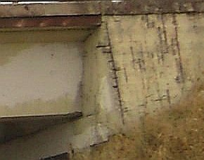
23. Korrodiertes Brückenauflager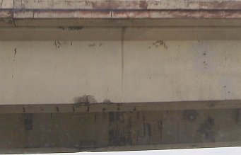
24. Angerostete Zugbewehrung des Brückenträgers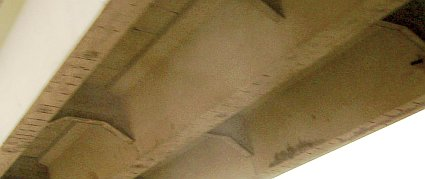
25. Stahlbetonschäden an Brückenuntersicht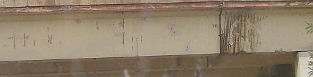
26. Flächig abgeplatzte Überdeckung und aufgerostete Bewehrung an Träger der Betonbrücke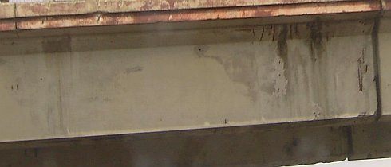
27. Armierungskorrosion an Träger und Platte der Straßenbrücke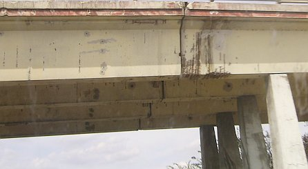
28. Rostschaden an Brückenträger und Stahlbetonpfeiler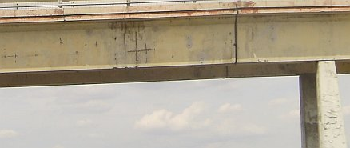
29. Armierungsverrostung und abgesprengte Betonüberdeckung an Stahlbetonbrücke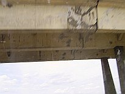
30. Aufgerissene und angerostete Trägerstöße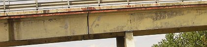
31. Betonschäden am Brückenträger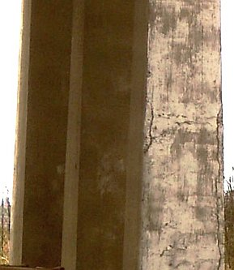
32. Aufkorrodierter Brückenpfeiler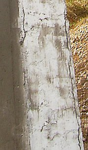
33. Schäden am Brückenpfeiler - Detail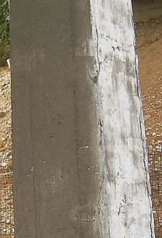
34. Aufgerissener Stahlbeton und Korrosionsschäden an Brückenstütze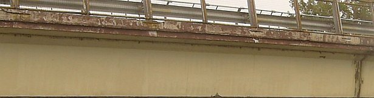
35. Freiliegende angerostete Bewehrung und Abplatzungen an Brückenplatte und Trägerstoß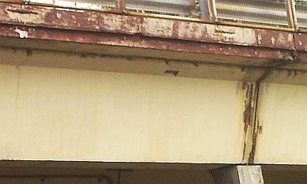
36. Rostschäden an Stahlbetonbewehrungen von Brückenstoß und Brückenplatte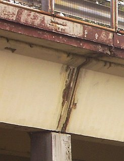
37. Bewehrungsschäden durch Eisenoxidation an Stahlbetonbauteilen im DetailNicht zu vergessen die Brückenkatatsrophe am 30. September 2006 in Kanada, als in Laval (Montreal) eine Stahlbeton-Straßenbrücke in sich zusammenstürzte und fünf Menschen erschlug, nebst sechs teils schwer Verletzten. Stundenlang vorher lösten sich nach einem kanadischen Zeitungsbericht schon Brocken aus dem Brückenbeton und stürzten herab. Schauen Sie sich also um, ob solche bedrohlichen Anzeichen an den Brücken wahrzunehmen sind, unter bzw. über die Sie fahren wollen ...
Bildunterschrift (Bild: Eingestürzte Brücke): "Der letzte Fall? Am 23. April, zwei Stunden vor der Sprengung, fiel die Autobahnbrücke bei Schwarmstedt zusammen - von alleine."
Bildunterschrift (Bild: Rundholzunterstützung unter Autobahnbrücke): "Aichelberg-Viadukt auf der A8 zwischen Stuttgart und München: Der kranke Beton hält nur noch mit Hilfe von Holzstempeln."
Bildunterschrift (Bild: Prüfer in Auslegerkran-Korb unter Autobahnbrücke): "Die Heubachbrücke auf der A 45 (Sauerlandlinie) bei Warburg: Auch hier fanden Prüfer Rost am Stahl und Risse im Beton."
Bildunterschrift (Bild: Die eingestürzte Kongreßhalle "Schwangere Auster"):"Kongreßhalle Berlin. 1980 fiel sie - keine zwanzig Jahre alt - in sich zusammen. Auch hier das Baumaterial: Spannbeton!"
Wie lange halten die Brücken noch?
An den Autobahnen bröckelt und bröselt der Beton, ganze Brücken stürzen ein. Der letzte Fall am vorletzten Donnerstag: Eine Brücke auf der A7 bei Schwarmstedt fällt in sich zusammen. Eine Frage baut sich auf: Wie sicher sind die Autobahnbrücken?
Soll man weinen oder lachen? Letzten Donnerstag, zwei Stunden bevor sie gesprengt werden soll, bricht auf der A7 bei Schwarmstedt eine abgesperrte Autobahnbrücke in sich zusammen, ohne daß eine der angebrachten Sprengkapseln gezündet wurde. Mitsamt drei Fahrzeugen versinkt der Sprengmeister in den Fluten der Aller, kann zum Glück aber gerettet werden. [...]
Die Ursache des Unglücks? Der stellvertretende Leiter des zuständigen Straßenbauamts in Verden, Oberbaurat Hermann Behrmann: "An der Statik der Brücke kann es nicht gelegen haben. Die wurde von renommierten Büros geprüft." Bleibt als Ursache - wie schon bei anderen Brückeneinstürzen der letzten Jahre - ermüdetes Material. Der verwendete Spannbeton nämlich, eine Verbindung aus Zement, Kalk, Gips und Asphalt mit darin eingelagerten Stahlzügen, ist [...] keineswegs so sicher, wie es die Brückenbauer immer wieder glauben machen wollen.
Der Einsturz der Berliner Kongreßhalle vor sieben Jahren, der Kollaps der Wiener Reichsbrücke vier Jahre zuvor und die Schwimmhalle im schweizerischen Uster, die zwölf Menschen zur tödlichsten Falle wurde: Immer war es "der Jahrhundertbaustoff" Beton, der irgendwann ohne Vorankündigung urplötzlich nachgab.
Dabei warnen versierte Ingenieure schon seit Jahren vor dem bröselnden und bröckelnden Baumaterial. Besonders in den fünfziger und sechziger Jahren wurde bei eilig hochgezogenen Betonbauten oft so gepfuscht, daß die eingebetteten Stahlverbindungen schon nach kurzer Zeit rosteten und feine Risse den Baustoff wie ein Geschwür zersetzen.
Im Anfangsstadium läßt sich der Krebs im Beton nur schwer feststellen. Einfacher ist die Diagnose, wenn - wie bei den Wohnsilos im Berliner Märkischen Viertel oder am Hamburger Mümmelmannsberg - ganze Platten von den Wänden platzen, bis die verrosteten Stahlmatten hervortreten.
Anders bei den Brücken. Schlecht gemischte und minderwertige Bindemittel lassen Wasser in feinen Rinnsalen bis zu den Stahlarmierungen im Inneren vordringen. Und unerkennbar von außen, frißt dann der Rost, bis die stählernen Zugkonstruktionen reißen, der Beton bricht. [...] Der frühere Münchner Prüfingenieur für Baustatik Philipp Schreck warnte die Baubranche. Über 8000 Spannbetonbrücken in der Bundesrepublik, so seine Warnung, wiesen solche Risse auf, seien einsturzgefährdet. Die Dementis aus dem Bundesverkehrsministerium können nach dem Brückenbruch von Schwarmstedt nur wenig überzeugen. [...]"
Weit über 2000 Kastenprofilbrücken in Spannbetonbauweise sind auf deutschen Autobahnen im Jahr 2000 neben den anderen schadhaften Betonbrücken in Sanierung bzw. kurz davor. Die zumindest volkswirtschaftlich suboptimale Bauweise - staatlicherseits durch immer wieder durch Bestechungsskandale glänzende Bauämter hervorgebracht - kostet so viel, daß von dem Geld leicht die Fehlstellen in unserem Autobahnnetz geschlossen werden können. Und anstatt die verrückte Betonbauweise ausreichend zu geißeln und hier bessere Technik zu fordern, schreien die Automobilclubs nach mehr Geld für den Straßenbau. Wem nützt das wirklich?Und die Entwicklung im Plattenbau? Schreck laß nach, die einsturzgefährdeten Wohnkolosse werden durch schadenskaschierenden Dämmstoff zu Schimmelbrutanstalten umfunktioniert und den doofen Mietern untergejubelt oder eben zur "Stadtperforierung" "rückgebaut" - altdeutsch: abgebrochen/abgerissen. Alles - wie deren Neubau - gefördert durch öffentliche Mittel. Baupolitik ist, wenn man trotzdem lacht. Betonbrücken sind weiterhin modern. Auch Pfusch. Siehe hierzu:
Allgemeine Bauzeitung 10.3.2000:
"Besonderer Beton für Expo-BrückeLEIPZIG (dpa). - Bei dem Bau einer Brücke anlässlich der Weltausstellung "Expo 2000" wird in Leipzig angeblich einweltweit einmaliges Verfahren angewendet. Für eine Stahlbetonbrücke werde ein Beton verwendet, der doppelt so fest wie herkömmlicher und zugleich wesentlich leichter sei, sagte Architekt Burkhard Pahl während des Baubeginns in Leipzig. "Der Beton ist so leicht, dass er sogar schwimmen kann".
Der tragende Brückenbogen wird nach Angaben von Pahl nur 35 Zentimeter schmal sein und eine Spannweite von 40 Metern haben. "Es wird eine filigrane Brücke", sagte der Architekt. Sie überspannt den Karl-Heine-Kanal im Stadtteil Plagwitz und wird Fußgängern und Radfahrern dienen. Die Arbeiten an der insgesamt 50 Meter langen Brücke, dem "Karl-Heine-Bogen", sollen im Mai beendet sein. Er wird einen Radweg mit einem Ausstellungsgelände der Expo in Plagwitz verbinden. Die Kosten betragen Pahl zufolge rund 850.000 Mark."
Oh je, wenn Architekten "filigranen" Beton verbauen, das ist jedenfalls bis heute weltweit noch nicht so gut gegangen, oder? Beim Stahlbeton kommt es nämlich - auch wenn er zum schwimmenden Luftikus aufgeschäumt wird - immer auf die Karbonatisierungsbremse durch Alkalitätsreserve an. Und hier zählt neben dem Zementgehalt vor allem die Überdeckung. Interessanter Ortsname: Plagwitz!!!Gut, daß wenigstens ein paar unserer Autobahnbrücken inzwischen mit der nicht gerade billigen aber zerstörungsfreien online-Schallemissionsanalyse dauerhaft und in Echtzeit überwacht (Monitoring) werden. Bisher hat man immer nur mal hingeguckt (kommt leider noch oft genug vor, dank mehr und mehr "sparsamer" Autobahnverwaltung (Wartung kommt von Warten?) und staatsverschuldet leerem Säckel) und konnte deswegen die Spannbetonstahlbrüche im Querschnittsinneren gar nicht feststellen, die dem für alle Brücken ohne rechtzeitigen Abbruch (oder Unterstützung mit Behelfskonstruktionen) unausweichlichen Einsturz unfehlbar vorausgehen. Nun montiert man also neuerdings Mikrofonsysteme an den Brückenträgern und "horcht" nach Knirsch und Knack, das wird dann online nach Kalifornien (US-Patent) gemeldet und dort auf Schadensrelevanz ausgewertet. Na hoffentlich klappt das immer! Was man so alles von Kalifornien weiß - ob da die Deutsche Gründlichkeit (ein Phantom heutzutage?) mit Microsoftereiabstürzen und US-typischem Drogenkonsum in allen Gesellschaftsbereichen immer kompatibel ist? Wir hoffen es. Alternativ gibt es auch Aufzeichnung der Betonknaller in einem Datenlogger, da muß man dann immer wieder hin und die Krächzgeräusche des Betons im nachhinein (und hoffentlich rechtzeitig) auswerten. Eigentlich auch ein passables System für die allerlei sonstig einsturzgefährdeten Betonruinen und sowieso für die allerorts einsturzgefährdeten Flachdach-Hallenkonstruktionen, oder? Ja, dolle Technik für den Bauschaden und ein breites Betätigungsfeld für die Baubranche. Motto: Bau Pfusch, das hilft am besten weiter.